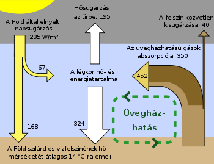
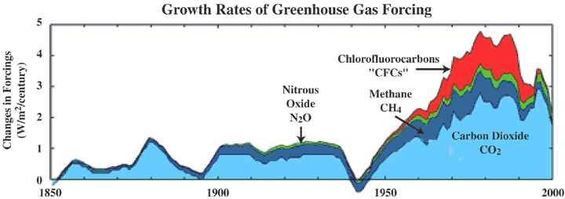

Tények
Honnan tudjuk hogy globális felmelegedés van?

A globális felmelegedés a földi klíma átlaghőmérsékletének hosszútávú megemelkedését jelenti, mely magában foglalja a felszíni vizek és a troposzféra hőmérsékletének emelkedését is. Az éghajlatváltozási keretegyezmény a globális éghajlatváltozás legfőbb okának az emberi tevékenységet nevezi meg. Az írott történelem előtti időkben is voltak globális felmelegedésben eltelt időszakok, ám ezek egyike sem volt olyan mértékben kiterjedt és gyors, mint a 20. század óta megfigyelhető felmelegedés, mely várhatóan még tovább gyorsul.
Globális felmelegedés okai:
Üvegházhatás
Az üvegházhatás olyan bolygók hőháztartását befolyásolja, amelynek légköre a csillagja fényét átereszti, de a saját hőmérsékleti sugárzásának egy részét nem. Emiatt a bolygó felszínéről a hő egy része nem jut közvetlenül vissza az űrbe, hanem különféle fizikai és meteorológiai folyamatokban vesz részt. Ezek megnövelik a felszín és az alsó légkör hőmérsékletét. Hasonló, de nem azonos folyamat tartja melegen az üvegházakat, amelyekről a jelenség a nevét kapta.
 Az üvegházhatású gázok:
- vízgőz, 36–70%
- szén-dioxid, 9–26%
- metán, 4–9%
- ózon, 3–7%.
Az emberi tevékenységből származó üvegházgázok:
Szén-dioxid: A legjelentősebb kibocsátók a hőerőművek, az egyéb iparágak és a közlekedés. Az elterjedt tévhittel ellentétben légköri koncentrációjának növekedéséhez nem járul hozzá az erdőirtás, mivel a kitermelt fa zömét a szén biológiai körforgásából kivonva (pl. bútornak, papírnak, talp- és bányafának stb.) hasznosítják. Viszont közvetetten növeli, mert a növények felelősek a szén-dioxid lebontásáért.
Metán: Az ember főleg az energiaszektorból, a mezőgazdaságból, valamint a hulladékgazdálkodással és szennyvízkezeléssel juttatja a légkörbe, de a kőolaj- és földgáz-kitermelés közben, valamint a földgázszállító csővezetékek repedéseiből is jelentősebb mennyiség jut ki.
Erdőkirtása
Az erdőirtás az erdőknek a szakszerű erdőgazdálkodás, újratelepítés nélküli elpusztítása. Az erdőirtás a fakitermelés, a mezőgazdasági területek növelése, az urbanizáció növekedése miatt világszerte gyorsul. A trópusi esőerdők égetése nemcsak az adott területen vezet ökológiai katasztrófához, hanem a felszabaduló szén-dioxid nagyban hozzájárul a globális felmelegedési válsághoz.
Az erdőirtás nem csupán a növényzet életterét számolja fel időlegesen, de kihat a terület ökoszisztémájára is. Nem csak a tarvágás vagy az égetés számolja fel egyes állatok élőhelyét, hanem az illegális szelektív fakitermelés is. Az élőhely megszűnésével megbillen az adott terület biodiverzitása, leginkább az emlősöket érinti érzékenyen egy-egy fafaj kitermelése, de a nagyobb mértékű kitermelés hatására eltűnnek a hüllők, madarak is.
Az erdőirtásnak további összetett, globális következményei vannak: a fák megkötik a levegő széntartalmát, megszűrik a csapadékvízből származó szennyező anyagokat és elengedhetetlenül fontosak a légkör páratartalmának szempontjából. A növényzet kihat a talaj víztározó képességére is, a kiirtott erdő helyén felgyorsul az erózió, a csapadék elmossa a talajt, megváltozik a vizes területek eloszlása.
2030-ra az amazonasi esőerdő 55%-a elpusztulhat a mezőgazdaság, az állattartás növekedése, erdőtüzek, a szárazság és a fakitermelés jelenlegi üteme alapján. Az erdők eltűnése miatt az Amazonas-medencéből 55-97 milliárd tonna szén-dioxid juthat a légkörbe. A felső érték esetén ez több mint a világ kétévi üvegházhatású gáz kibocsátása.
Tenger szint emelkedése
A tengerszint emelkedés milliók lakóhelyeit veszélyezteti, és az egész emberiség életkörülményeit befolyásolja.
A szárazföldi jégtakarók és gleccserek olvadékvize mellett a globális tengerszint emelkedésében más tényezők is közrejátszanak, az egyik legjelentősebb az egyre melegedő óceán hőtágulása. Ezek a tényezők együttesen jelenleg évente 3,3 mm-rel növelik a globális óceán szintjét. A globális felmelegedés fokozódásával az emelkedés üteme egyre gyorsul, vagyis az éves ráta évtizedenként nagyjából 1 mm-rel nő.
A tudományos kutatások eredményei azt mutatják, hogy 2100-ig fokozatosan, egyre erőteljesebb hatással lesz ez a változás az életkörülményeinkre. Nem csupán a gyermekeink, vagy az unokáink életét, de még a miénket is meghatározza, sőt, valójában már most befolyásolja az a környezetben zajló láncreakció, melyben a tengerszint emelkedése csupán a pillangó, ami megrebbenti a szárnyát. Jelenleg 1,4 milliárd fő helyzete drasztikus a növekvő tengerszint miatt.
Milyen következményei lehetnek az tengerszint emelkedésének?
- Migráció
- A tengeráramlatok leállása-időjárásban bekövetkező változások
- Kihalás szélére sodródó fajok
- Gyakoribbá válnak természeti katasztrófák
- Problémák az ivóvízellátásban és a vízenergia hasznosításában
- Megnövekedik a levegő széndioxid-szintje a permafroszt felolvadása miatt